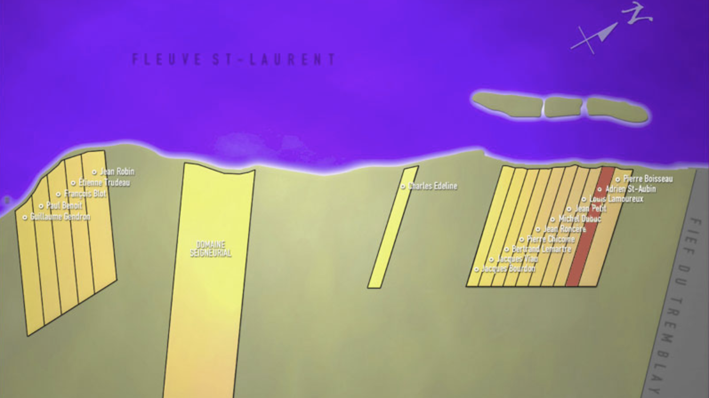
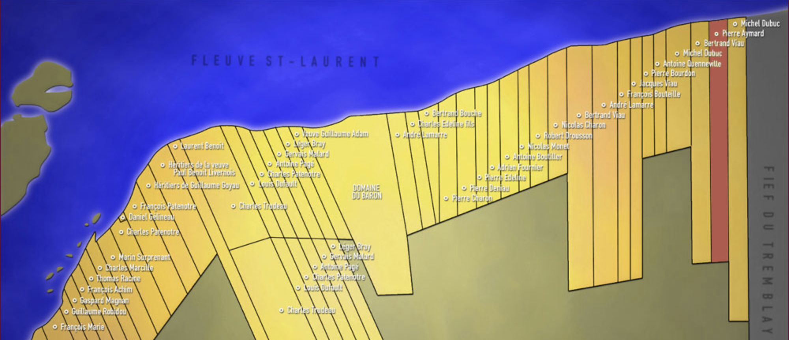
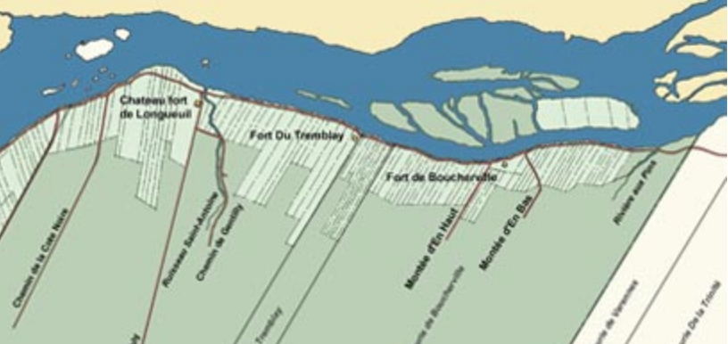
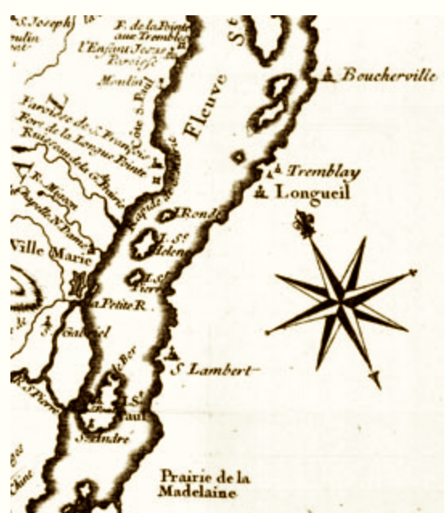

Question : Marigot.ca présente deux images des lots de Longueuil : Terre de Andrien St-Aubin en 1675 ; Terre de Pierre Emard en 1723, quand Pierre était marié à la veuve St-Aubin, Marguerite. Voici un petit aperçu. Pour plus d'info sur l'histoire de Longueuil : https://www.longueuil.quebec/fr/histoire/vieux-longueuil.
HISTOIRE
1657 : La seigneurie originale de Longueuil : 50 aprents de large x 100 ar. De profondeur. Accordé à Charles Le Moyne.
1672 - 1676 : La seigneurie de Longueuil agrandie. ex. Octroie de l'intendant Jean Talon.
1672 : Fief du Tremblay accordé au sieur de Varennes. Il se trouve entre les seigneuries de Boucherville et de Longueuill
TODO OR IGNORE : NOTE : Adrien Saint-Aubin - aussi un lot dans la Seigneurie de Boucherville, 1668?1675? Aussi dans le fort Tremblay
1675 Longueuil : les premières concessions de la seigneurie.
Gauche:
Guillaume Gendron, Paul Benoit, François Blot, Étienne Trudeau, Jean Robin
Milieu:
Millieu : Dommaine Seigneurial
Droite : Charles Edeline ... Jacques Bourdon, Jacques Viau, Bertrand Lemartre, Pierre Chicoine, Jean Roncère, Michel Dubuc, Jean Petit, Louis Lamoureux, Adrien St-Aubin (Adrien Saint-Aubin de la Normandie), Pierre Boisseau.
**En gris : Fief du Tremblay
1695 : "Le fort du Tremblay est construit en bois près du fleuve, à proximité du fief Du Tremblay. Il ne réuissit pas à repousser les assauts des Iroquois." NB : Le fort est construit à 1 lot de droit du lot St-Aubin.
1698 : Le château fort de Longueuil complété.
1701 : Signature de la «Grande Paix» ou la «Paix de Montréal»
1703 : Les voisins de St-Aubin et Jeanne Marguerite Bloys (Bail #15) - "la veufve Lapointe d'un costé et Jean Baptiste Mesnard d'autre costé"
1723 Longueuil : les habitants des concessions de la seigneurie.
Gauche: [Etienne Achin, André Marcille], François Marie, Guillaume Robidou, Gaspard Magnan, François Achim, Thomas Racine, Charles Marcille, Marin Surprenant, Charles Patenotre [et petit terrain : Daniel Gélineau], François Patenotre, Héritiers de Guillaume Goyau, Héritiers de la veuve Paul Benoit Livernois
-------
1er rectangle long/mince : Laurent Benoit
-------
Rive et sud : Charles Trudeau (gros rectangle), Louis Dufault, Charles Patenotre, Antoine Pagé, Gervais Adelard, Léger Bray, Veuve Guillaume Adam (1/2)
------
DOMAINE DU BARON
------
Droite : André Lamarre, Charles édeline fils, Bertrand Bouche, Pierre Charon, Pierre Deniau, Pierre Edeline, Adrien Fournier, Antoine Boutiller, Nicolas Monel, Robert Drousson, Nicolas Charon, [longs rectangles] Bertrand Viau, André Lamarre, François Bouteille, Jacques Viau - [lots plus courts] Pierre Bourdon, Antoine Quenneville, Michel Dubuc, Bertrand Viau, Pierre Aymard (rouge), Michel Dubuc

1675 : Terre Saint-Aubin, Longueuil. A droit : Fief Tremblay.

1723 : Terre Aymard-dit-Poitevin, Longueuil.

1722: : Forts de bois : Saint-Lambert, Tremblay, Boucherville; En pierre : Longueuil
1764 - mi-chemin e.
(6) https://hssh.journals.yorku.ca/index.php/hssh/article/viewFile/38977/35365 - Fernand Ouellet, "Officiers de milice et structure sociale au Québec (1660-1815)."